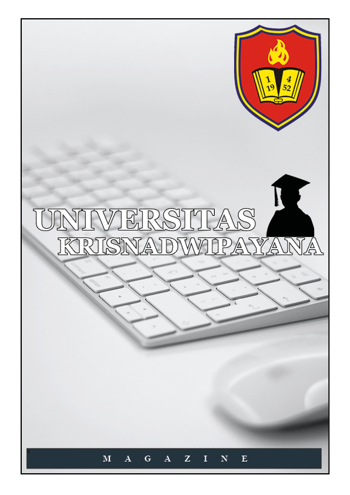
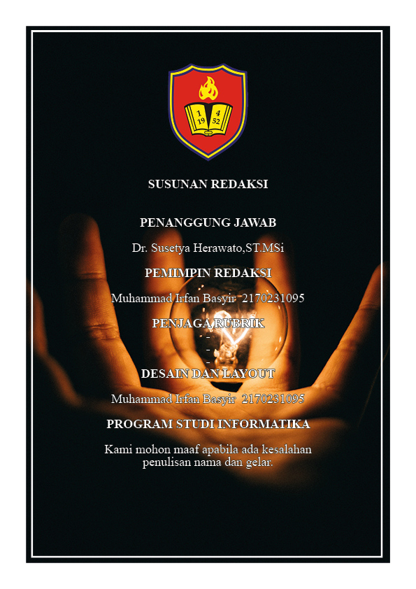

UNIVERSITAS KRISNADWIPAYANA (UNKRIS) adalah salah satu perguruan tinggi swasta tertua di Jakarta, yang berdiri pada 1 April 1952 dan memiliki gedung sendiri di atas area seluas 16 HA dengan suasana kampus yang sejuk serta lokasi yang mudah dijangkau. Universitas Krisnadwipayana sendiri saat ini menyelenggarakan program kelas reguler dan kelas karyawan (ekstensi). Universitas Krisnadwipayana atau UNKRIS yang terletak di Jl. Jatiwaringin Raya, Pondok Gede, Bekasi - Indonesia ini telah menduduki posisi penting baik di instansi pemerintahan maupun swasta di dalam dan luar negeri.


Dr. Ir. Ayub Muktiono, M.SIP, CIQaR
Sambutan REKTOR UNKRIS
Assalamu’alaikum wr. wb.
Salam Sejahtera bagi kita semua,
Universitas Krisnadwipayana (UNKRIS) didirikan pada tanggal 1 April 1952, 68 tahun yang lalu, nama Krisnadwipayana diambil dari nama seorang begawan yang berhasil mendidik keluarga Bharata menjadi satria pinandita, yaitu Insan Illahi yang berwatak baik, berbudi luhur, cerdas, tekun, terampil dan memiliki semangat pengabdian yang tinggi terhadap Bangsa dan Negara. Dengan kebesaran nama Krisnadwipayana para Pendiri UNKRIS berharap para lulusan UNKRIS dapat menjadi Insan Illahi sebagaimana didikan Begawan Krisnadwipayana.Alhamdulillah, sampai dengan saat ini UNKRIS tetap berdiri tegak dan eksis sebagai salah satu Perguruan Tinggi Swasta yang dapat mempertahankan reputasinya secara nasional. UNKRIS senantiasa berbenah dan mengembangkan diri menuju Universitas Unggulan.
UNKRIS memiliki gedung perkuliahan dan administrasi yang berdiri di atas lahan ± 16Ha berada di Jatiwaringin, Pondok Gede, Jakarta Timur. Kampus UNKRIS dipenuhi aneka tanaman hijau dan tanaman produktif yang rimbun nan asri, teduh dan nyaman untuk belajar, selain itu dilengkapi pula dengan Pendopo, Masjid, Sarana Olah Raga dan Lapangan Parkir yang luas. Saat ini telah dibuat Master Plan Percepatan Pembangunan Universitas Krisnadwipayana (MP3UK) Tahun 2015-2020, dengan MP3UK diharapkan dapat diwujudkan Universitas Krisnadwipayana sebagai Universitas Unggul dengan program studi yang berkualitas, inovasi dalam pengembangan sistem pendidikan tinggi pada tahun 2025.
Kontribusi UNKRIS terlihat dari jumlah alumni yang dihasilkan, diantaranya telah berhasil dalam berkarier antara lain menempati posisi sebagai Menteri, Wakil Menteri, Hakim Agung, Duta Besar, Bankir maupun Pengusaha, namun UNKRIS belum merasa puas dan bangga karena masih banyak generasi penerus bangsa yang masih membutuhkan pendidikan khususnya di bidang pendidikan tinggi, mengingat masa depan Bangsa dan Negara Indonesia berada di pundak mereka. Saat ini seluruh Program Studi yang ada di UNKRIS sejumlah 17 Program Studi telah terakreditasi oleh Badan Akreditasi Nasional Perguruan Tinggi. Program Strata 1 terdiri dari Fakultas Hukum, Fakultas Ekonomi, Fakultas Ilmu Administrasi & Fakultas Teknik, sedangkan Program Strata 2 terdiri dari Magister Manajemen, Magister Ilmu Hukum, Magister Ilmu Administrasi & Magister Teknik serta Program Strata 3, yaitu Program Doktor Ilmu Hukum.
Tokoh


Teknik


Opini